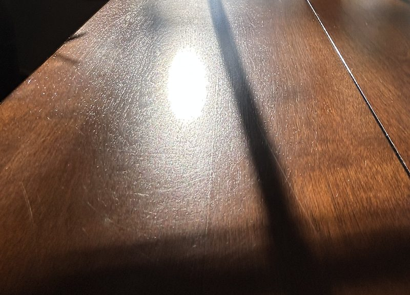
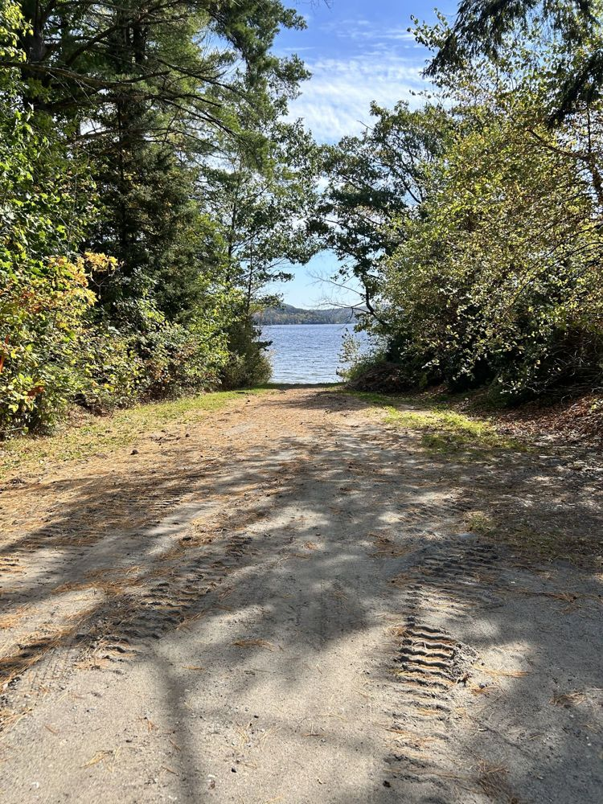

Adirondack Craftworks
Timeless handcrafted wooden pieces inspired by the beauty of the Adirondack Mountains and Schroon Lake.
Handmade with precision in the Adirondacks
Our handcrafted collection
Timeless handcrafted wooden pieces, made in the Adirondacks. A sentence or two about you, your shop, and the woods you work with
Custom signs
One line about these
Cutting boards
One line about these
Furniture accents
One line about these
Custom commissions
Custom commissions available. Tell me about your custom idea or inquiry.
Signs, cutting boards, and furniture accents come from an earlier version of the site. Keep, change, or remove
Featured: high-end mahogany bear sculpture
This luxurious, highly detailed mahogany bear sculpture is carved with intricate details capturing the spirit of Adirondack wildlife. Using premium mahogany, it is perfect as a high-end display piece, heirloom, or statement decor for your home or cabin near Schroon Lake.
Wording from the current site. Confirm this piece exists and is yours
Custom commissions available. Elevate your space with a bespoke creation.
Gallery
Every photo here should be your own work. Send 4 to 8 photos of finished pieces
Inspired by the Adirondacks
Inspired by the beauty of the Adirondack Mountains and Schroon Lake.



Get in touch
Interested in a custom piece? Tell me about your custom idea or inquiry.
- EmailBusiness email (the live site shows email@adirondackcraftworks.com, which looks like a sample)
- PhonePhone number, if you want one listed
- LocationSchroon Lake, New York